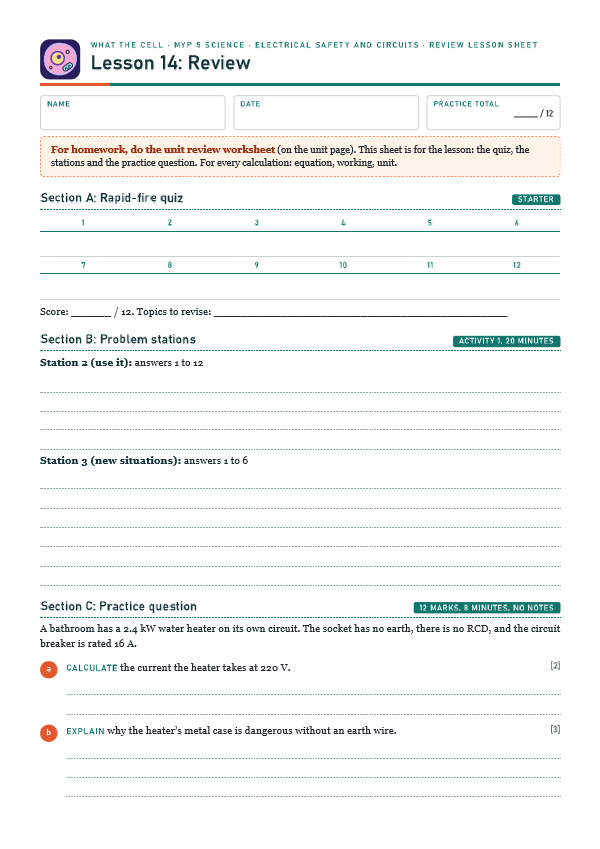

By the end of the lesson you can
- Recall the key ideas, equations and units of the unit
- Solve problems in familiar and unfamiliar situations
- Analyse a case study and make a supported judgement
- Use command terms to see what each question asks
Keys: arrows or a presentation clicker move the slides, F for full screen. Slides with a red dot have a video or simulation.
Videos (all 5 minutes or less)
- 4:56
Series and parallel circuits
FuseSchool. A quick recap of the circuit rules. Slide 8.
- 3:53
Plugs and wires
Cognito. A recap of live, neutral and earth. Slide 15.
- 3:37
How an RCD works
Electrical How To. A recap of the device that protects people. Slide 15.
Simulations
- Lab
Home Safety Lab: make it safe
What the Cell. Six cases from real homes: aim for 6 out of 6 before the test.
- Lab
Circuit Practicals Lab
What the Cell. Predict every meter reading before you look, and sketch the I-V graphs from memory.
Print and practise

Activity and practice sheet
Used in the lesson’s activities, with practice questions. Your teacher has the answers.
Download (PDF)Lesson 14 slides
All 21 slides in one file, to read again or print. The video buttons on the slides open YouTube.
Download the slides (PDF)Revising? The Revision tab on the unit page has the unit notes and review.
Notes: Review
How to revise
Do the unit review worksheet and check it against your teacher's answers. Read the unit notes, one section a day. Practise the equations until you can write them from memory.
Revise like a scientist
Test yourself instead of rereading: cover your notes, write what you remember, then check. Space it out over several days. Practise problems in new situations, with working and units.
Five steps for calculations
Write what you know with units; choose the equation; convert units; substitute and calculate; give the unit and check the answer makes sense.
Command terms
State: a short answer. Describe: what happens. Explain: what happens and why. Calculate: a number with working and a unit. Suggest: a sensible idea in a new situation. Evaluate: weigh up options and make a judgement.
Strong evaluations
Name the options, give the science and numbers for each, compare them, then make a judgement with a reason linked to the situation.
Bring to the test
A calculator, a pen, a pencil and a ruler.
Key words
| familiar situation | a problem like ones you have practised |
|---|---|
| unfamiliar situation | a new context where you must apply the same science |
| judgement | a decision backed by science and evidence |
| command term | the key verb that tells you what kind of answer is needed |
| unit review | the 62-mark revision worksheet for the whole unit |
| self-marking | checking your answer against a mark scheme to find what to improve |